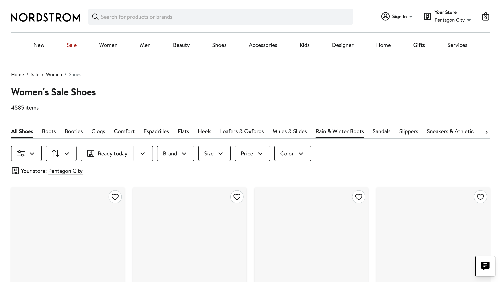
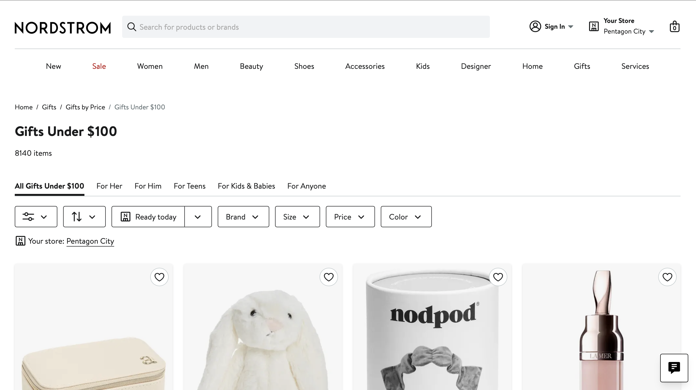
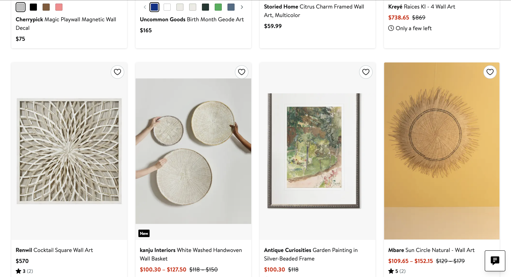
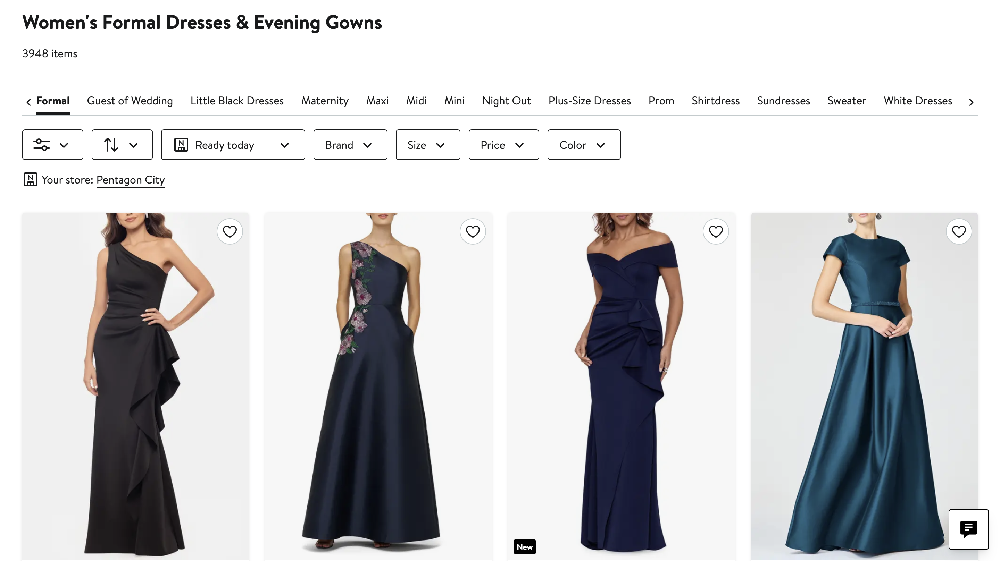
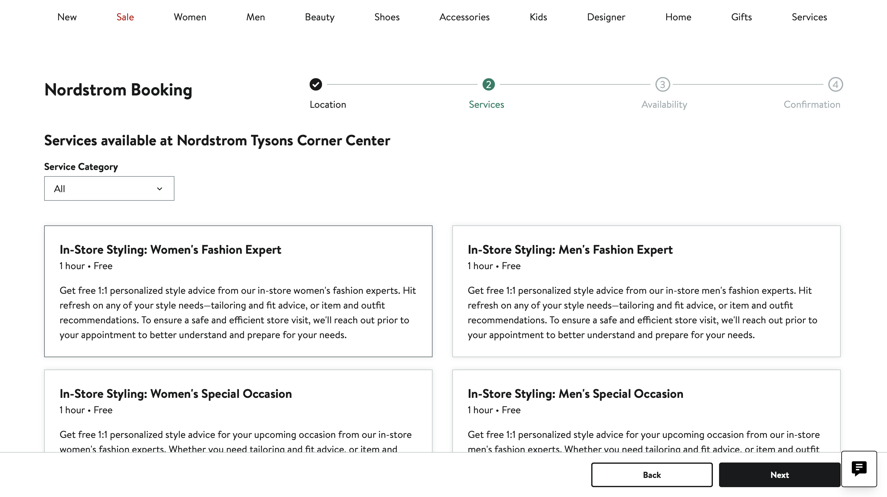

Time: 40.96 sec
The user searched for formal shoes by using sale filter and reacted that many options felt too fancy and expensive. Despite this, they selected a pair and added a size 6 medium to their cart.

Time: 24.57 sec
The user searched for a plush item and chose a dragon, commenting positively on its appearance (“so cute”) while also noting the price.

Time: 52.23sec
The user expressed surprise at pricing of wall art and continued browsing without using sorting filters. They scrolled through items but did not select the highest-priced options.

Time: 45.12sec
The user searched for a formal dress and selected a blue option that balanced style—neither too flashy nor too plain—in size 4.

Time: 2:20.52 min
The user attempted to verify the store location by scrolling to the footer. While there, they looked for styling services but were unable to find them immediately.